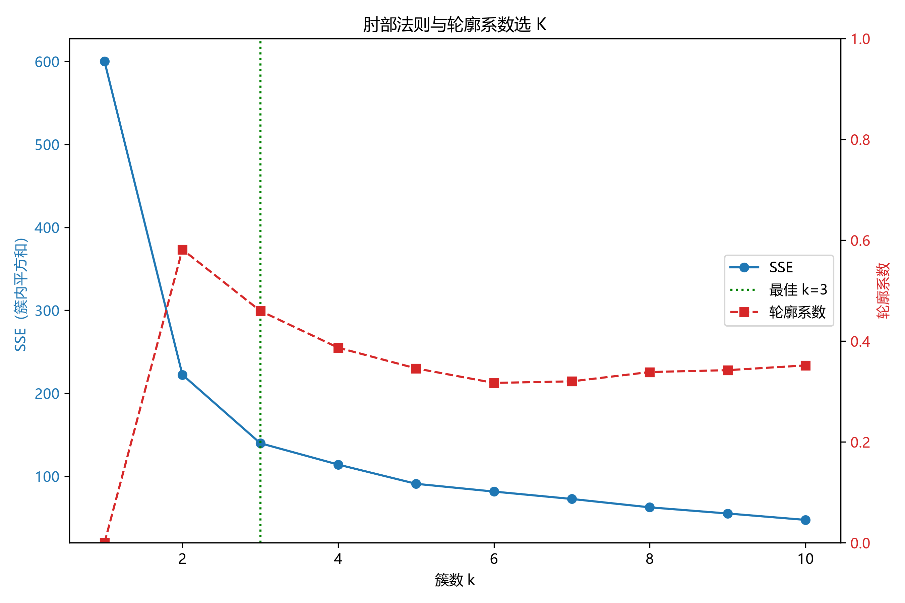
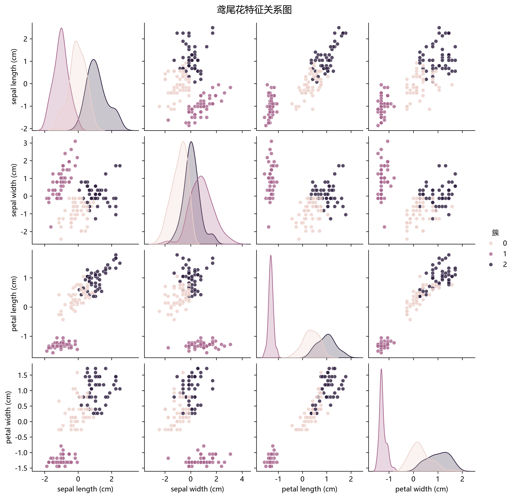
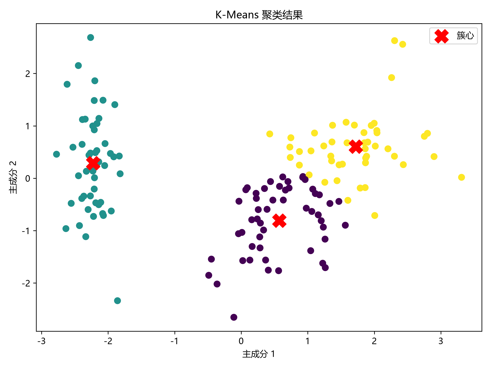
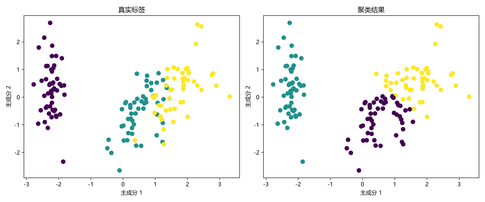
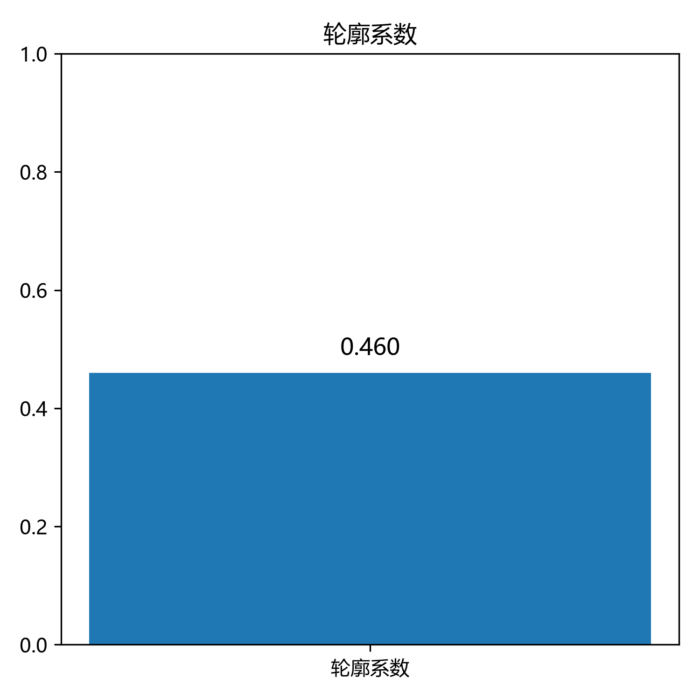

| 特征名称（中文） | 原始列名（英文） | 数据类型 | 非空数量 |
|---|---|---|---|
| 花萼长度 (cm) | sepal length (cm) |
float64 | 150 |
| 花萼宽度 (cm) | sepal width (cm) |
float64 | 150 |
| 花瓣长度 (cm) | petal length (cm) |
float64 | 150 |
| 花瓣宽度 (cm) | petal width (cm) |
float64 | 150 |
下表展示了鸢尾花四个特征在 150 个样本上的统计分布情况，包括均值、标准差、四分位数等。
| 花萼长度 (cm) | 花萼宽度 (cm) | 花瓣长度 (cm) | 花瓣宽度 (cm) | |
|---|---|---|---|---|
| 样本数 | 150.00 | 150.00 | 150.00 | 150.00 |
| 均值 | 5.84 | 3.06 | 3.76 | 1.20 |
| 标准差 | 0.83 | 0.44 | 1.77 | 0.76 |
| 最小值 | 4.30 | 2.00 | 1.00 | 0.10 |
| 25%分位数 | 5.10 | 2.80 | 1.60 | 0.30 |
| 中位数 | 5.80 | 3.00 | 4.35 | 1.30 |
| 75%分位数 | 6.40 | 3.30 | 5.10 | 1.80 |
| 最大值 | 7.90 | 4.40 | 6.90 | 2.50 |
经检查，所有特征均无缺失值，数据完整，可直接用于建模。
| 特征名称（中文） | 原始列名（英文） | 缺失值数量 | 缺失率 | |
|---|---|---|---|---|
| 序号 | ||||
| 1 | 花萼长度 (cm) | sepal length (cm) | 0 | 0.00% |
| 2 | 花萼宽度 (cm) | sepal width (cm) | 0 | 0.00% |
| 3 | 花瓣长度 (cm) | petal length (cm) | 0 | 0.00% |
| 4 | 花瓣宽度 (cm) | petal width (cm) | 0 | 0.00% |
Iris 数据集包含三个品种，每个品种各 50 个样本，类别分布均衡。
| 类别编号 | 品种名称（中文） | 样本数 | 占比 |
|---|---|---|---|
| 类别 0 | 山鸢尾 (Setosa) | 50 | 33.3% |
| 类别 1 | 变色鸢尾 (Versicolor) | 50 | 33.3% |
| 类别 2 | 维吉尼亚鸢尾 (Virginica) | 50 | 33.3% |
通过遍历 K=1~10，结合肘部法则 (SSE) 与轮廓系数双重指标， 自动确定最佳簇数为 K=3，对应轮廓系数 0.460。 该系数表明聚类效果一般，簇间存在一定重叠。
下表展示了不同 K 值下的 SSE（误差平方和）与轮廓系数。SSE 越小越好，轮廓系数越接近 1 越好。
| 簇数 K | SSE（误差平方和） | 轮廓系数 |
|---|---|---|
| K = 1 | 600.00 | —（k=1 无法计算） |
| K = 2 | 222.36 | 0.582 |
| K = 3 最佳 | 139.82 | 0.460 |
| K = 4 | 114.09 | 0.387 |
| K = 5 | 90.93 | 0.346 |
| K = 6 | 81.54 | 0.317 |
| K = 7 | 72.63 | 0.320 |
| K = 8 | 62.54 | 0.339 |
| K = 9 | 55.12 | 0.342 |
| K = 10 | 47.39 | 0.352 |




